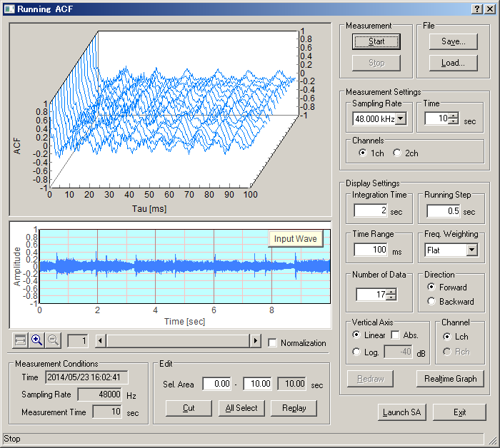

DSSF3 > RA > Running ACF > Measurement guide
Performing the measurement
Start the measurement
Click the start button to perform a measurement. Input signal is recorded for the specified measurement time. Calculated ACF and the input waveform is displayed in real time.

Changing the display settings
After the measurement is finished, display settings can be changed. Click the Redraw button to display the new results.
Waveform display and replay sound
A temporal waveform of the recorded sound is displayed below the ACF graph. Horizontal axis is time [s] and the vertical axis represents the amplitude. When the input level is small, check the Normalization box. Normalized waveform between +1/-1 will be displayed for clarity. Click the Replay button to listen to the recorded sound.
Editing the input wave
Only the useful part of the signal can be saved by using the editing function. Right click the waveform display and drag the mouse. Then the selected area is displayed in blue. Click the Cut button to remain the selected area and cut out the non selected area.
DSSF3 > RA > Running ACF > Measurement guide